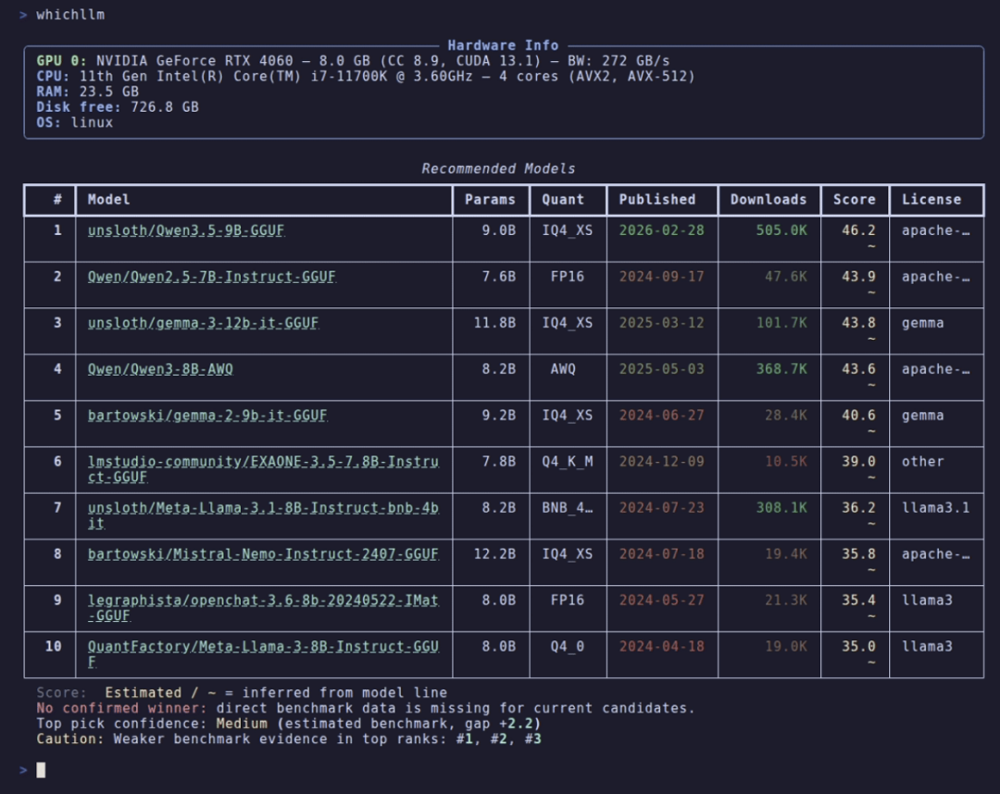
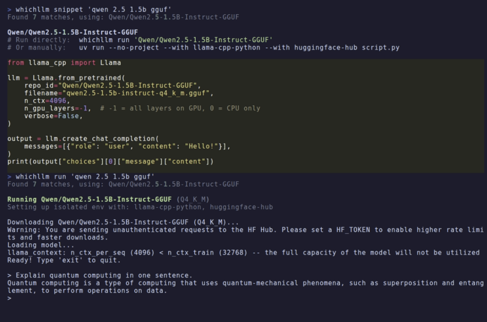
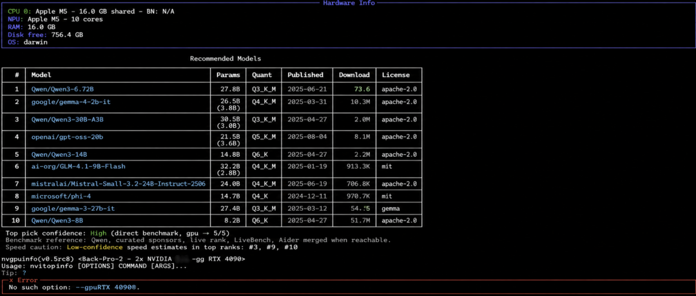
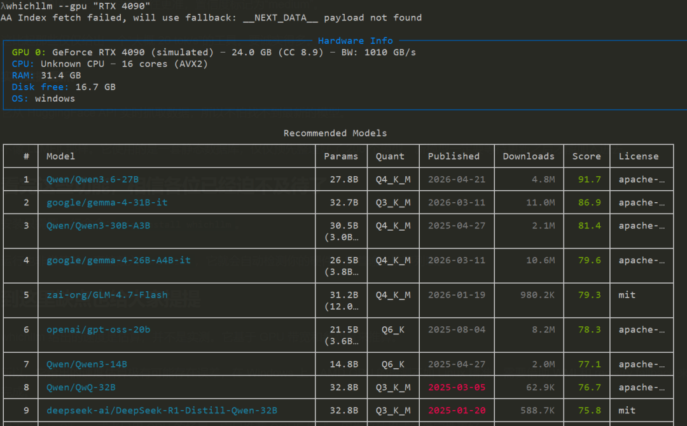
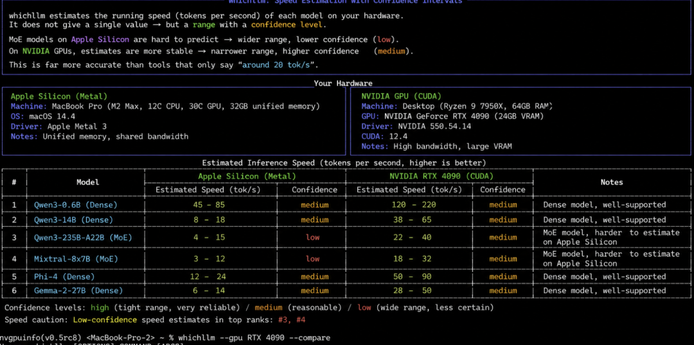

HuggingFace 上面堆着200多万个模型仓库。
它们的参数量从 1B 一直覆盖到 100B，量化方式从 Q2 一直到 Q8，格式则涵盖了 GGUF、AWQ 等等。
想要搞清楚自己电脑，能够跑哪些模型，一般需要折腾上好一阵子。
就算费劲找到一个能塞进显存的模型，真正让它跑起来会发现速度只有 3 tok/s，说一句话就要等上半分钟。
又要重新找，重新下载，选择成本极高。
这时候，一个叫 whichllm 的工具就显得很有意思了。这个 CLI 工具在 GitHub 上的星数，已悄悄涨到了 2000 多颗。
它会根据你电脑的配置，推荐出哪些模型在你的电脑上跑的又快又好。
说白了不只是告诉你哪些模型能跑起来，还有哪些模型在你的电脑上体验更好、性价比更高。
先看看效果
直接在命令行里敲入 whichllm。它就会自动检测你的硬件配置，以后输出一个推荐列表。
表格里会显示出排名、模型名称、参数量、量化方式、评分还有速度，这些信息一目了然。

你还可以借助 --status 查看更多细节，举例内存占用情况，还有 fit 类型，也就是 Full GPU、Partial Offload 或者 CPU-only。
假如你想指定使用场景，可以选用 --profile coding 或者 --profile vision，它会相应地调整评分权重，优先推荐适宜编程或者视觉任务的模型。
假如你想了解某个模型怎么运行，可以借助 whichllm snippet，它会输出一段 Ollama 或 llama.cpp 的命令片段，直接复制粘贴过去就可以跑了。

要是想把数据导出，加上 --json 参数就能拿到完整的元数据，这样方便你写脚本来做后续处理。
再说说原理
看完这些效果。你或许会好奇它到底是怎么达成的。
01 硬件自动检测。
对于 NVIDIA 显卡，它借助 pynvml 来检测，AMD 显卡在 Linux 上，则借助 rocm-smi 来推进检测工作。
Apple Silicon 在 macOS 上，凭借 system_profiler 来实施检测，甚至连运行 Asahi Linux 的 Apple Silicon 都能识别出来。

有人要说了，我的电脑没有显卡，能不能测。
同样的它可以检测 CPU 核心数量和内存大小。
能为你推荐只使用 CPU 的方案。
02 GPU 模拟功能。
这个功能很有意思，不需要真的把显卡买回来才知道能跑什么。
很多人想在本地跑大模型，上网一查都是让买 4090，5060 显卡，也不知道能跑哪些模型。
这个时候有了whichllm。就可以用 whichllm --gpu "RTX 4090" 来模拟 4090 显卡的运行环境。

这样就能看到这张卡能跑什么样的模型，以及速度大概是多少。
03 多维度评分系统。
在评分这上，它做了证据分层。
像 direct 这种实测匹配的数据，权重最高。
而 self-reported 这类模型作者自行上报的信息，权重会低很多。
这样做的好处就是，推荐结果会更偏向真实 benchmark，避免被模型宣传描述所误导。
它还会考量 benchmark 分数、量化质量、速度估算以及硬件适配程度。
比方说，你的 RTX 4090 有 24GB 显存，理论上可以运行 32B 的模型。
whichllm 可能会建议你去跑 27B 的 Q5_K_M，理由是它的 benchmark 分数更高，跑的又快又好。
04 量化惩罚机制。
量化等差越低，模型也就被压缩得越厉害，显存是省了，但回答质量也会打折扣。
像 Q2_K 的质量损失会比较明显，而 Q5_K_M 基本上，已经接近原模型的效果了。
除了核心推荐功能，还有一些好的细节
速度估算带置信度。
whichllm 会估算每个模型在你硬件上的运行速度，它给出的并非单一数值，而是一个带有置信度标记的区间。
一个 MoE 模型在 Apple Silicon 上运行时，速度估算可能是 4-15 tok/s，置信度标记为“low”，缘由是这类场景的估算难度比较大。

而在 NVIDIA 显卡上，估算往往更准，置信度标记为“medium”。
这比起那些仅仅给出一个“大概 20 tok/s”的工具。要准确得多。
实时数据更新。
它从 HuggingFace API 实时抓取数据，所以不怕找不到最新的模型。
不像 LLMFit 那样。它使用的是一套静态数据库，仅仅预先整理好了 206 个模型，新模型一定要等待更新之后才能加入进去。
看完这些功能，相信各位已经迫不及待了
安装只需要一行命令：pip install whichllm。
运行也非常简单：直接敲入 whichllm，它就会自动检测你的硬件，接着输出推荐列表。
到这里缺点也给大家提提
说到底，whichllm 所给出的速度数据仅仅是估算值，并不是实际测量的结果。它借助 GPU 带宽和参数量来进行推算。
它所提供的数据很可能存在一定的误差。
在 Windows 平台上。AMD GPU 的检测没有 Linux 那么精准，还得靠 WMI 和 registry fallback 来补全。
碰上 Apple Silicon 芯片，或者只有 CPU 的运行环境，它就会只推荐 GGUF 格式，为了兼容性以及稳定性。
如果系统是Linux ，恰好有 NVIDIA 显卡，它也会推荐 AWQ 或 GPTQ这两种。
写在最后
以前有朋友问我，想在本地跑大模型，但是不知道该选哪个。
其实这里面有两个问题，一个是显卡的问题，一个是跑哪个模型的问题。
我就上网查了查，翻了好些网页，最后也问了 AI 。
说实话，每一个回答都有差异。
我就手动整合了一个版本，发过去了。
信息的获取上，确实花了点时间。
有了 whichllm，几分钟把这个事情就搞定了。
评论区大家可以聊一下自己是怎么从零部署一个大模型的。
whichllm 基于 MIT 协议开放，感兴趣的同学可以去 GitHub 仓库看看源码以及文档。
开源地址：https://github.com/Andyyyy64/whichllm
既然看到这里了，欢迎随手点赞、在看、转发，也可以给我个星标⭐，接收最新的文章，我们下期再见。